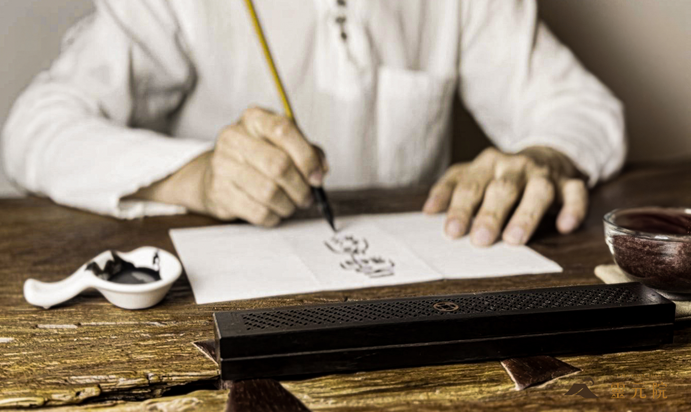

關於宇色

靈元院緣起與法脈
奉靈山派創始神無極瑤池金母慈示，於台中設立專屬靈修之會靈聖地。以喚醒元神靈性為靈修根本，提供自修者一個心靈梲居静修之所。靈元院規制與儀軌，依循靈山派無極法精神與無極瑤池金母降示之教導，向世人分享靈山派獨樹一幅的元神修煉奧秘、信仰神學與空間美學。

靕心修持的靈性空間美學
本院舉凡道場題名、布置擺設、芸術美學以及空間規劃，均依無極瑤池金母親降指示，及空間氣場流動而設計。形成一處隱匿於都市叢林中，寧靓且適於靈修人親近無極瑤池金母靈山法靕修的環境，使每一位進到靈元院的信眾皆能靕心，感受到空間所帶來的沉靓與安寧。
靈元院目前於隱院靕修期間
目前靈元院處於隱院靕修階段，暫不對外開放參訪。
如有事務、法務或修行相關諮詢，敬請透過電話或 Telegram 聯繫。
TEL 0975-256579
Telegram 官方頻道
Telegram 聯繫帳號